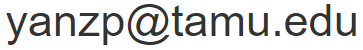

I just typed this page manually. So if you found any error in this page, please feel free to send me an email at . Thanks.
Not precise definition of Linux distributions. You can use following environments for this course:
Some commands you may have to use, but not limited to:
| Command | Usage |
|---|---|
| pwd | Show current directory. $pwd |
| ls | List files of current directory. $ls Options: -a: Show all files, including hidden files.-l: Long format, including time, date, permissions, and owner.
|
| cd | Change directory. E.g. $cd .. go to parent folder. |
| mkdir | Make a new directory. $mkdir folderName |
| rmdir | Remove a directory. $mkdir folderName |
| cp | Copy a file. $cp file newfile |
| mv | Move a file. Used as rename if the file is moved to the same folder. $mv filename newfile |
| rm | Remove a file. $rm filename Use -R to recusively delete all files and subfolders. |
| cat | Display a plain text file on the screen. $cat filename |
| touch | Touch an existed file to change the timestamp to current time. Touch a non-existed file to generate a new plain text file. $touch filename |
| sudo | Run command under root privilege $sudo somecmd $ means the command is run under normal user privilege, while # means root privilege. |
Some (external) commands you may have to use, but not limited to:
| OS | Command |
|---|---|
| Debian/Ubuntu | Use #apt-get update to update repo information. Use $apt-cache search something to search for softwares. Use #apt-get install something to install the package. |
| RH/Fedora | Use #yum update to update your packages. Use $yum search something to search for softwares. Use #yum install something to install the package. |
| Archlinux | Use #pacman -Su to update repo information. Use $pacman -Ss something to search for softwares. Use #pamcan -S something to install the package. |
| Mac OS | Install Homebrew and use $brew install something to install the missing packages. |
| MinGW | https://sourceforge.net/p/mingw-w64/wiki2/GeneralUsageInstructions/ |
You may need GCC, GDB, MAKE, CMAKE, BOOST, GLIBC to compile your code. On Debian/Ubuntu, #apt-get install build-essential to install some of them. On other distributions, you may have to install them seperately.
In this course, you can use any editor you want. Three options for cmd-line are: Nano, Vim and Emacs.
The fastest way to use vim is: use $vim filename to edit a file, press i to enter insertion mode, press esc to exit editing mode, press two capitalised Z to save and exit, i.e. ZZ or Shift+zz. A vim cheat sheet: https://devhints.io/vim
For Emacs, https://wiki.cse.tamu.edu/index.php/How_to_use_emacs
Some options for editing with GUI (on Windows, Linux, or Mac): Notepad++, VS Code, Sublime, Atom
| Protocals | Usage |
|---|---|
| SSH | $ssh username@linux2.cs.tamu.edu to login to remote server, then you get a linux shell. |
| SFTP | $sftp username@linux2.cs.tamu.edu to login to remote server.cd to the file your want to download.lcd to the directory you want to use locally.$get filename to download the file. Or $get filename localFile Use $put filename to upload the file. |
| Tools | Usage |
|---|---|
| tar | $tar -czvf filename.tar.gz yourFolder to compress your folder to a gzip file. $tar -xzvf filename.tar.gz to extract your files from a gzip file to current directory. |
| zip | $zip -r filename.zip yourFolder to compress your folder to a zip file. $unzip filename.zip to extract your files from a zip file to current directory. |
https://wiki.cse.tamu.edu/index.php/Basic_UNIX_Commands
https://wiki.cse.tamu.edu/index.php/Vi_tutorial